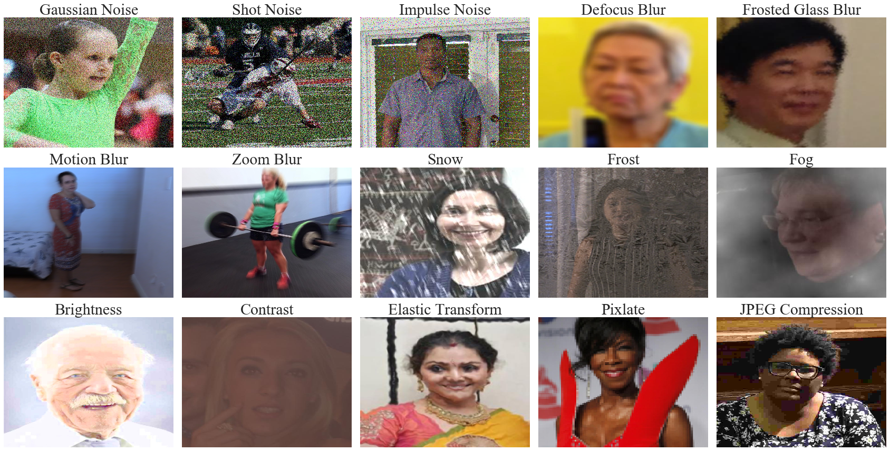
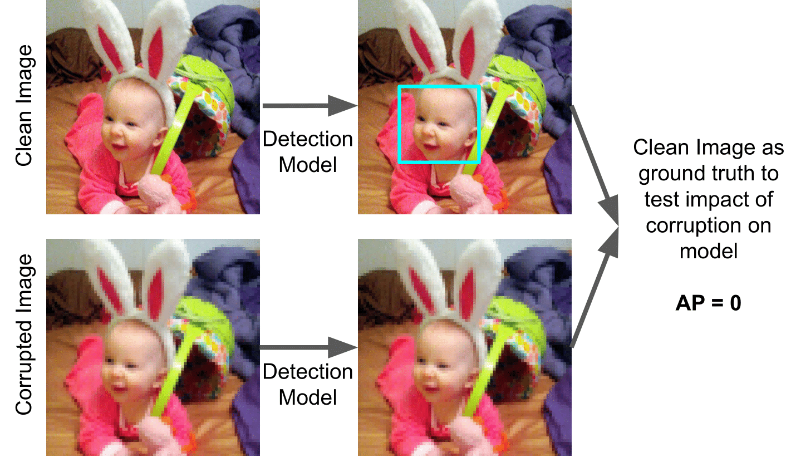
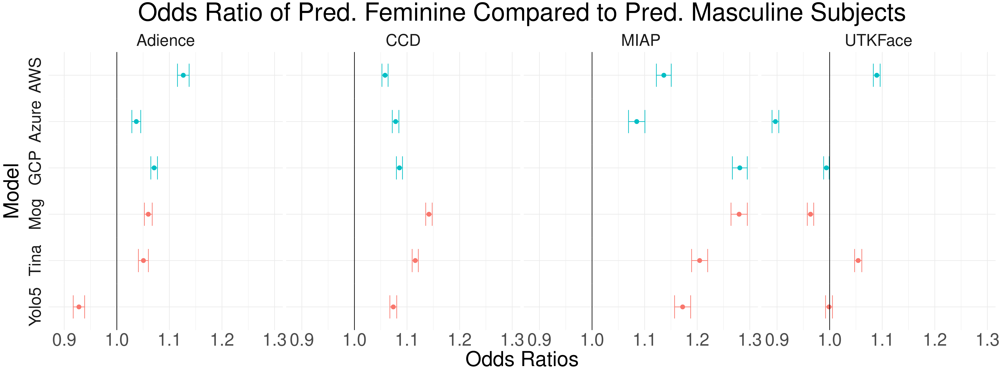
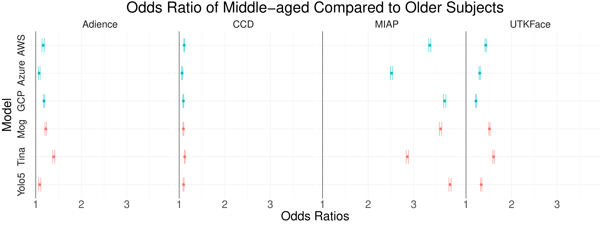

Facial analysis systems have been deployed by large companies and critiqued by scholars and activists for the past decade. Many existing algorithmic audits examine the performance of these systems on later stage elements of facial analysis systems like facial recognition and age, emotion, or gender prediction; however, a core component to these systems has been vastly understudied from a fairness perspective: face detection. Since face detection is a pre-requisite step in facial analysis systems, the bias we observe in face detection will flow downstream to the other components like facial recognition and emotion prediction. Additionally, no prior work has focused on the robustness of these systems under various perturbations and corruptions, which leaves open the question of how various people are impacted by these phenomena. We present the first of its kind detailed benchmark of face detection systems, specifically examining the robustness to noise of commercial and academic models. We use both standard and recently released academic facial datasets to quantitatively analyze trends in face detection robustness. Across all the datasets and systems, we generally find that photos of individuals who are masculine presenting, older, of darker skin type, or have dim lighting are more susceptible to errors than their counterparts in other identities.
Our benchmark consists of 5,066,312 images of the 15 types of algorithmically generated corruptions produced by ImageNet-C. We use data from four datasets (Adience, CCD, MIAP, and UTKFace) and present examples of corruptions from each dataset here.
Depiction of how Average Precision (AP) metric is calculated by using clean image as ground truth.
Gender disparity plots for each dataset and model. Values below 1 indicate that predominantly feminine presenting subjects are biased against. Values above 1 indicate that predominantly masculine presenting subjects are biased against. Error bars indicate 95% confidence.
Age disparity plots for each dataset and model. Values greater than 1 indicate that older subjects are biased against compared to middle aged subjects. Error bars indicate 95% confidence.
This research was supported in part by ARPA-E DIFFERENTIATE Award #1257037, NSF CAREER Award IIS-1846237, NSF D-ISN Award #2039862, NSF DMS-1912866, NSF Award CCF-1852352, NSF Award SMA-2039862, NIH R01 Award NLM-013039-01, NIST MSE Award #20126334, DARPA GARD #HR00112020007, DoD WHS Award #HQ003420F0035, and the ONR MURI program. We thank Candice Schumann for answering questions related to the MIAP dataset, as well as Aurelia Augusta, Brian Brubach, Valeria Cherepanova, Vedant Nanda, Aviva Prins, Liz O'Sullivan, Neehar Peri, and Candice Schumann for advice and feedback.